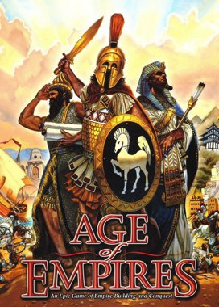

{% extends 'components/layout.html' %}
{% block content %}
GAME FACTS PAGE

{{ title }}
{{ headline }}
- Age of Empires is a series of historical real-time strategy video games, originally developed by Ensemble
Studios and
published by Xbox Game Studios.
- The first game was Age of Empires, released in 1997. Nine total games within the series
have been released so far as of 28 October 2021.
-
Age of Empires focused on events in Europe, Africa and Asia, spanning from the Stone Age to the Iron Age; the expansion
game explored the formation and expansion of the Roman Empire.
-
The Age of Empires series has been a commercial success, selling over 25 million copies. Critics have credited part of
the success of the series to its historical theme and fair play; the artificial intelligence (AI) players have fewer
advantages than in many of the series' competitors.
{% endblock content %}